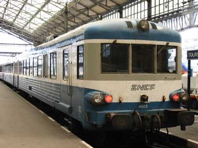
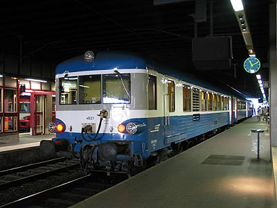
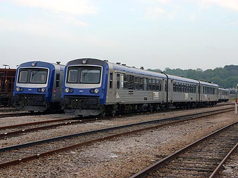

Ferrovia - 30 Mai 2012
X 4900
Les EAT
Les X 4900 ou EAT pour Eléments Automoteurs Tricaisses sont des versions surmotorisés des X 4630. Deux motrices de type 4630 (moteur Saurer de 330 kW et convertisseur de couple Voith) encadrent une remorque sans cabine. Destinés à des relations plus longues que les autres Caravelles, les X 4900 disposaient de sièges individuels comme les X 4790.
13 rames ont été construites de 1975 à 1977.
Le rapport poids-puissance de ces engins leur permet une vitesse limite de 140 km/h.
Deux types d'usage étaient prévus à l'origine. La desserte de ligne au profil difficile (Marseille - Briançon, Marseille - Veyne - Grenoble) et des relations d'autorails express en Normandie. Ils assuraient notamment des Caen-Tours, Caen-Rennes. Ils sont désormais sur la ligne Rouen-Dieppe.
Alors que la plupart des Caravelles étaient amorties, les X 4900 ont bénéficié d'un répit et la totalité de la série a été lourdement modernisée avec des cabines renforcées.
Quelques données techniques
Constructeur : ANF
Motorisation : 2 x Saurer SDHR
Puissance : 660 kW
Vitesse limite : 140 km/h
Masse : 103,8t
Longueur : 62,230 m; 64,230m après modernisation
Pour plus d'info :
La fiche X 4900 sur Wikipedia
Fiche technique des X 4900 de Florent Brisou
L'inventaire des X 4900 sur Trains du Sud-Ouest

L'X 4923 à Tours

L'X 4921 à Rouen rive droite (05/07/2003)

Les X 4901 et 4921 à Dieppe (13/05/2006)